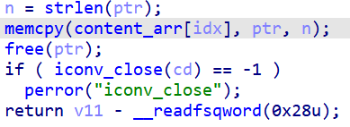
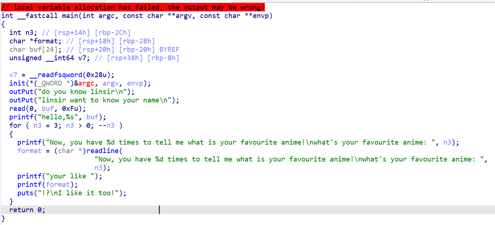
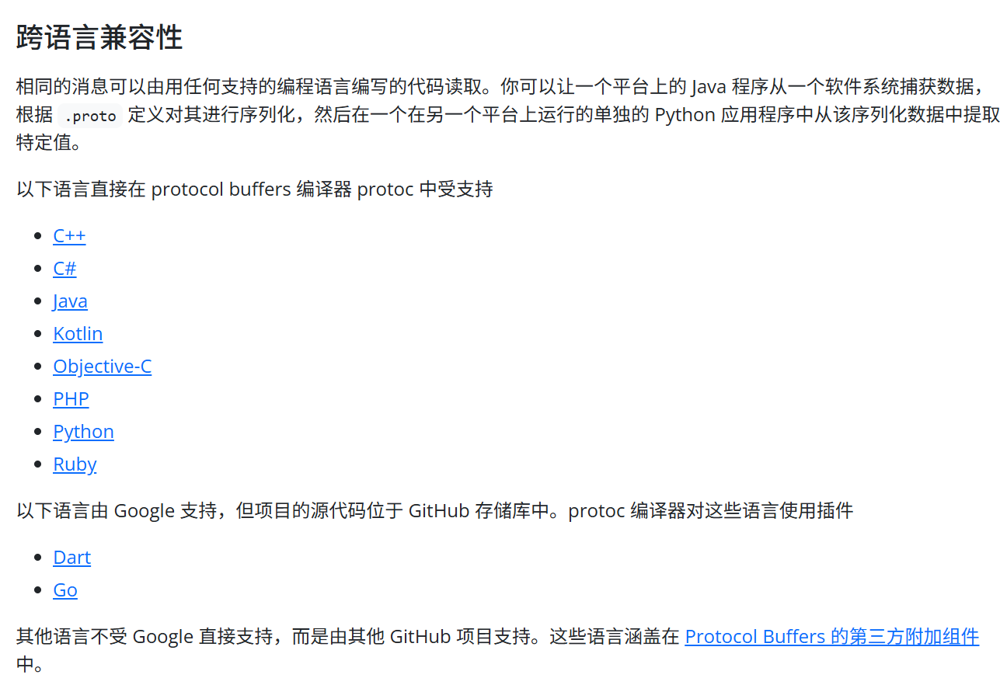
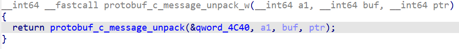
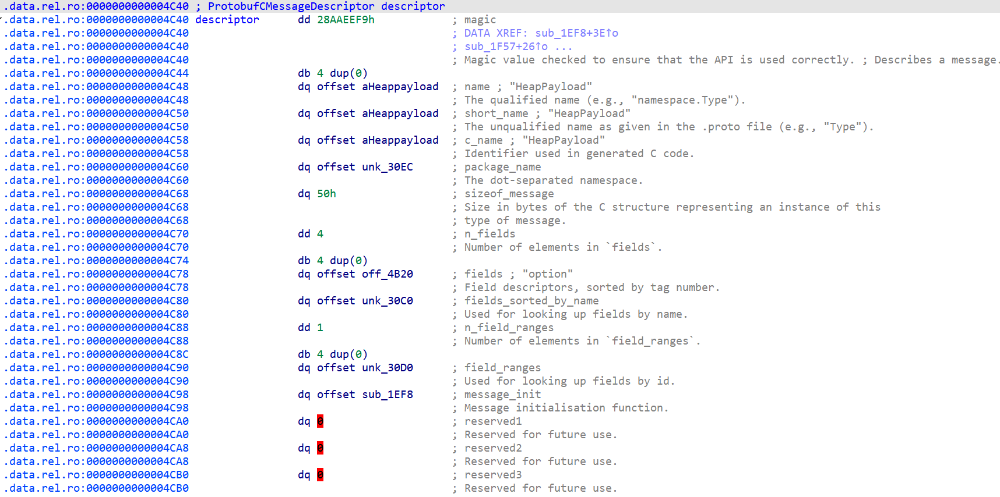

CISCN&CCB AWDP-PWN-FIX 入门
前言
前段时间在准备ciscn&ccb半决，由于半决赛没有re，所以我这个半吊子re手只能被迫学了点awdp的pwn fix
但是比赛的时候check脚本非常抽象，所以拼尽全力也只修出一道，好在是第一轮就修出来了，而且其他题也几乎没人拿分，再加上我们的web大碟狠狠发力，竟意外地进了决赛，哈哈哈
附一张领奖图：
不过话说回来，那几天的突击过程中还是学到一点东西的，这里笔者根据自己的理解，结合前两年的题目，总结了一些经验，希望对刷到的有缘人能有一定的帮助，大佬们的话可以划走了
AWDP概述
AWDP，即AWD Plus，分为Web和Pwn两个方向，每个方向又分为Break（攻击）和Fix（防御）两个部分。
以Pwn方向为例，攻击没什么好说的，就是去打主办方的靶机，和普通CTF差不多；防御的话，需要我们来给程序的漏洞打补丁，让主办方的exp打不通，同时还不能影响程序原本的正常功能
所以我们的目标也很明确，就是需要找出程序的漏洞点，并采取相应的措施将其修复
修的时候我用的是siesta老灯学长推荐的一个叫做AwdPwnPatcher的工具，可以通过写python脚本的方式（半）自动地patch二进制程序，一方面可以节省时间，另一方面方便管理，多次patch也不容易混乱，下面漏洞类型部分给出的代码模板示例均基于该工具
打包命令
比赛时需要交一个tar/tar.gz压缩包，将二进制程序和主办方下发的update.py打包到一起
目录结构：
1 | update/ |
打包命令：
1 | tar -czvf update.tar.gz -C update . |
漏洞类型
AWDP比赛中PWN方向的大部分题目都是菜单题，常见的漏洞大致可归纳为这几种：UAF、堆溢出、off-by-one(null)、格串、栈溢出
比赛的时候，尤其是在程序逻辑非常复杂时，没必要还原出所有细节，可以多往这几个方向上思考
其中，UAF和格串特征最为明显，找不出漏洞的时候可以多往其他三种上靠
01 UAF
一般出现在菜单中的delete功能中
只free掉指针，但没有将其置为null
1 | .text:0000000000001589 loc_1589: ; CODE XREF: delete+67↑j |
patch.py
1 | from AwdPwnPatcher import * |
02 堆溢出
常出现在菜单的edit功能中，写入的字节比原来malloc的字节更多，我们在patch的时只需要让size始终保持原来申请堆块时的size即可

1 | .text:0000000000001A53 48 8B 45 E0 mov rax, [rbp+ptr] |
patch.py
1 | from AwdPwnPatcher import * |
下面是之前写的一个错误版本：
1 | asm = f""" |
看起来差不多，但是看编译结果显示的很奇怪，原因是先取4字节再符号扩展到8字节并不等同于直接取8字节，这样可能会覆盖到后面的变量
总结经验：当patch之后IDA反编译结果变得很奇怪，变量之间重叠在一起，可能就是修的有问题
03 off-by-one
常见原因：字符串操作问题、循环取等导致多一次
核心就是要找到规定大小和实际大小是否存在相差1的情况
04 格式化字符串
本质就是输出函数直接将用户输入作为格式化字符串解析，改法也很简单，在用户输入作为参数，并在前面添加真正的格式化字符串即可

1 | from AwdPwnPatcher import * |
05 栈溢出
常常只是修改一个数值，较为简单
1 | from AwdPwnPatcher import * |
Protobuf
没学过pwn，之前没接触过这个，但是看24 25每年都考，所以稍微准备了一下，结果今年没考……
关于Protobuf是什么:
从往年来看，考察的话要么是C要么是C++（当然也不排除考其它语言的可能性，毕竟：

C
protobuf官方不支持C语言，用的是第三方库protobuf-c
做protobuf类的题目，无论什么语言，首要任务就是恢复结构体，可以手动恢复，也可以使用专门的工具自动恢复
这里以C为例，先展示一下手动恢复的过程
首先需要定位unpack函数

其原型为：
1 | ProtobufCMessage * |
其中最重要的就是这个ProtobufCMessageDescriptor指针，可以通过它来还原protobuf的消息结构体
此时可以将protobuf-c的头文件导入IDA，方便应用结构体

对照头文件中的定义：
1 | struct ProtobufCMessageDescriptor { |
可以发现这个程序的message结构体大小为0x50，有4个字段
其中，fields是指向的是一个ProtobufCFieldDescriptor类型的结构体，该结构体用于描述具体消息字段
1 | struct ProtobufCFieldDescriptor { |
label、type对应的枚举
1 | typedef enum { |
1 | typedef enum { |
这里我们如果想要恢复结构体，有两种办法：
- 根据偏移直接填写字段
- 先恢复.proto文件，再编译成.h文件
1 | syntax = "proto3"; |
编译：
1 | protoc -c_out=. HeapPayload.proto |
成功恢复：
1 | struct HeapPayload |
工具恢复的话，可以使用下面这个妙妙工具InkeyP/protobuf_rev，同时支持C/C++/GO/Rust
Go逆向
24年华中半决考了一道Go Pwn，但Go反编译出来的代码植物人看了都绷不住，笔者水平有限，也没怎么准备，这里先留个白
相关函数
下面复制粘贴总结了一些常见I/O函数和字符串操作函数的函数原型和特性，备赛时可以自己多积累一些
gets
C 库函数 char *gets(char *str) 从标准输入 stdin 读取一行，并把它存储在 str 所指向的字符串中。当读取到换行符时，或者到达文件末尾时，它会停止，具体视情况而定。
下面是 gets() 函数的声明。
1 | char *gets(char *str) |
- str – 这是指向一个字符数组的指针，该数组存储了 C 字符串。
如果成功，该函数返回 str。如果发生错误或者到达文件末尾时还未读取任何字符，则返回 NULL
gets() 函数从标准输入读取字符，直到遇到换行符 \n 为止。它的处理方式是：
- 舍弃换行符 —— 换行符不会被存入字符串中
- 添加空字符 —— 在字符串末尾自动添加
\0
fgets
C 库函数 char *fgets(char *str, int n, FILE *stream) 从指定的流 stream 读取一行，并把它存储在 str 所指向的字符串内。当读取 (n-1) 个字符时，或者读取到换行符时，或者到达文件末尾时，它会停止，具体视情况而定。
下面是 fgets() 函数的声明。
1 | char *fgets(char *str, int n, FILE *stream) |
- str – 这是指向一个字符数组的指针，该数组存储了要读取的字符串。
- n – 这是要读取的最大字符数（包括最后的空字符）。通常是使用以 str 传递的数组长度。
- stream – 这是指向 FILE 对象的指针，该 FILE 对象标识了要从中读取字符的流。
如果成功，该函数返回相同的 str 参数。如果到达文件末尾或者没有读取到任何字符，str 的内容保持不变，并返回一个空指针。
如果发生错误，返回一个空指针。
注意，fgets会把换行符读入到字符串中
read/write
1 |
|
它们分别用于：
read：从文件描述符fd读取最多count个字节到bufwrite：把buf中最多count个字节写入文件描述符fd指向的对象中
参数含义：
fd：文件描述符，例如0是标准输入，1是标准输出，2是标准错误buf：读/写缓冲区count：请求读/写的字节数- 返回值类型
ssize_t：成功时返回实际传输的字节数，失败返回-1并设置errno
strcpy
C 库函数 char *strcpy(char *dest, const char *src) 把 src 所指向的字符串复制到 dest。
需要注意的是如果目标数组 dest 不够大，而源字符串的长度又太长，可能会造成缓冲溢出的情况。
下面是 strcpy() 函数的声明。
1 | char *strcpy(char *dest, const char *src) |
- dest – 指向用于存储复制内容的目标数组。
- src – 要复制的字符串。
该函数返回一个指向最终的目标字符串 dest 的指针。
strncpy
C 库函数 char *strncpy(char *dest, const char *src, size_t n) 把 src 所指向的字符串复制到 dest，最多复制 n 个字符。当 src 的长度小于 n 时，dest 的剩余部分将用空字节填充。
下面是 strncpy() 函数的声明。
1 | char *strncpy(char *dest, const char *src, size_t n) |
- dest – 指向用于存储复制内容的目标数组。
- src – 要复制的字符串。
- n – 要从源中复制的字符数。
该函数返回最终复制的字符串。
atoi
C 库函数 int atoi(const char *str) 把参数 str 所指向的字符串转换为一个整数（类型为 int 型）。
下面是 atoi() 函数的声明。
1 | int atoi(const char *str) |
该函数返回转换后的整数，如果没有执行有效的转换，则返回零。
sprintf
C 库函数 int sprintf(char *str, const char *format, …) 发送格式化输出到 str 所指向的字符串。
下面是 sprintf() 函数的声明。
1 | int sprintf(char *str, const char *format, ...) |
snprintf
snprintf() 是一个 C 语言标准库函数，用于格式化输出字符串，并将结果写入到指定的缓冲区，与 sprintf() 不同的是，snprintf() 会限制输出的字符数，避免缓冲区溢出。
与 sprintf() 函数不同的是，snprintf() 函数提供了一个参数 size，可以防止缓冲区溢出。如果格式化后的字符串长度超过了 size-1，则 snprintf() 只会写入 size-1 个字符，并在字符串的末尾添加一个空字符（\0）以表示字符串的结束。
下面是 snprintf() 函数的声明。
1 | int snprintf ( char * str, size_t size, const char * format, ... ); |
int snprintf(char *str, size_t size, const char *format, …) 设将可变参数**(…)**按照 format 格式化成字符串，并将字符串复制到 str 中，size 为要写入的字符的最大数目，超过 size 会被截断，最多写入 size-1 个字符。
readline
在C语言中，readline函数的主要功能是从终端读取一行数据并返回。该函数的原型如下：
1 | char *readline(const char *str); |
使用时首先需要包含头文件*<readline/readline.h>*
在程序中调用readline函数，该函数会在终端上显示一个提示符，等待用户输入。
用户输入完后，按下回车键，readline函数会将用户输入的字符串返回给程序。需要注意的是，返回的字符串是通过malloc函数分配的内存，因此使用完毕后需要使用free函数释放内存。
示例代码
1 |
|
汇编
下面是我在学习fix的时候一些有疑问的汇编指令，顺手记了一下
__x86_get_pc_thunk_bx
1 | call __x86_get_pc_thunk_bx |
1 | __x86_get_pc_thunk_bx: |
call之后栈底为下一条指令地址，即此函数将add ebx, (offset _GLOBAL_OFFSET_TABLE_ - $)这条指令的地址赋值给了ebx
add ebx, (offset _GLOBAL_OFFSET_TABLE_ - $)求的是当前指令到GOT表基址的相对偏移
而前一步 ebx 已经拿到了“当前指令附近的运行时真实地址”，所以再加上这个相对偏移，就得到：
1 | ebx = _GLOBAL_OFFSET_TABLE_ 的运行时真实地址 |
lea 指令
lea指令用于将变量的地址装进寄存器
例如：
1 | lea rax [rax+rdx] |
就是将rax+rdx的结果放到rax寄存器中
但是该指令在32位和64位程序的寻址方式上有所不同
例如:
32位
1 | lea eax [0x694] ; 8D 05 94 06 00 00 |
前2个字节用于表示lea的操作码和操作的寄存器，后面4个字节是变量的绝对地址
64位
1 | lea rax [0x694] ; 48 8D 05 F1 FF FF FF |
而64位下，由于寄存器为64位，故指令前多了一个0x48前缀，同时，后面的4个字节不再表示变量的绝对地址，而是一个相对偏移地址rel32
具体来说：
目的地址target=lea指令长度+signExtend(rel32)
换言之，rel32表示目的地址与lea的下一条指令的地址之间的相对偏移
又因为patch程序的.eh_frame段和程序的.text段的相对距离是不变的，所以在fix64位程序时，可以直接lea一个符号地址，因为在机器码层面实际上是填的对应的相对偏移，不受pie的影响
但是在32位程序中，如果程序开启了pie，那么就不可以直接lea符号地址了，因为程序加载的基址并不确定，所以需要构造原地跳转，先求出程序基址，再加偏移，从而求出符号在运行时的真实地址